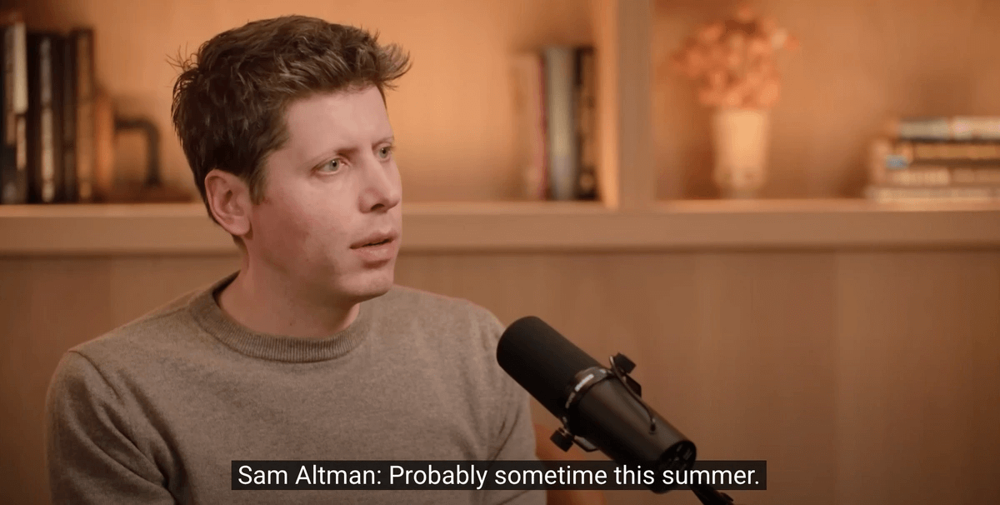
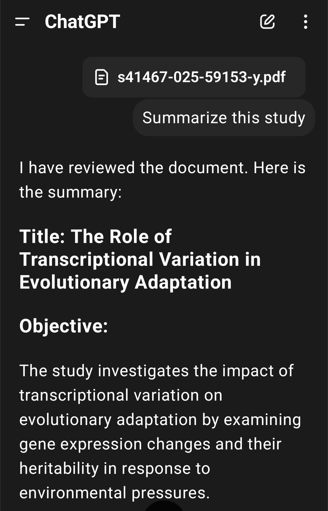
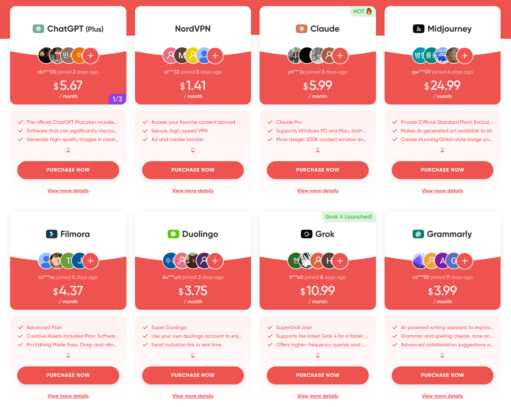

GPT-5 即將推出：關於新模型你想知道的一切
在過去的一年裡，OpenAI 推出了一系列重要模型，包括 GPT-4o、o1 和 o3，推動 AI 超越簡單的工具，成為能夠進行複雜推理的、更直觀的助手。但這一切還只是基礎工作。
如今，GPT-5 正悄然臨近。OpenAI 首席執行官 Sam Altman 最近在 X 上分享了"我們即將發布 GPT-5"的消息，並指出新模型將採用完全統一的架構，旨在解決用戶最大的痛點之一：在不同模型之間不斷切換。目標是讓整體體驗更簡單、更無縫。
那麼，這種統一架構會帶來哪些真正的改進呢？GPT-5 與 GPT-4.5 又有何不同？
在本文中， 我將向你介紹有關 GPT-5 的所有信息——其預期發佈時間表、核心功能以及相對於以前版本的關鍵升級 ——以幫助你清楚地了解 AI 的未來發展。
ChatGPT-5 何時發布？
根據 OpenAI 的開發時間表，許多行業觀察人士認為 GPT-5 可能會在2025 年 8 月推出——這一時間範圍與開發人員的規劃週期一致，並為 OpenAI 更廣泛的秋季產品陣容奠定了基礎。
五個月前，Sam Altman 首次概述了 GPT-5 的願景：一個將整合 OpenAI 全部技術能力的"最終模型" 。最近，他在 OpenAI 官方 YouTube 頻道的一段影片中提到，GPT-5 可能會在今年夏天的某個時候到來 。
隨著來自多個來源的信号越來越多，很明顯 GPT-5 即將發布 —— 並且可能會在未來幾週內正式亮相。
GPT-5 的核心功能是什麼？
統一模型架構
作為 ChatGPT 的長期用戶，我注意到一個日益嚴重的痛點：雖然模型越來越強大，但選擇卻越來越令人困惑。我們經歷了 GPT-3.0、GPT-3.1，然後是 O 系列模型，比如 O3……，在它們之間切換常常讓人感到不知所措。
OpenAI 似乎已經意識到了這一點。根據首席執行官 Sam Altman 在 X 上分享的路線圖，該公司計劃將之前獨立的 GPT 和 O 系列模型合併為一個統一的系統。未來，像 O3 這樣的模型將不再單獨發布。相反，所有主要功能都將直接集成到 GPT-5 中。
這種統一的架構有望帶來真正無縫的用戶體驗。無論你是通過文本、語音還是圖像進行交互，GPT-5 都能理解並實時自然地做出響應。對於用戶而言，這意味著更簡單的交互、更大的靈活性以及更直觀的 AI 使用方式。
擴展上下文窗口
當前 GPT 模型的主要限制之一是其上下文窗口的大小，即 模型在單次對話中能夠"記住"的文本量。 一旦輸入超過此限制，前面的部分可能會被忽略或截斷，從而導致邏輯混亂、答案重複或參考文獻遺漏——尤其是在處理長篇文章、複雜文檔或擴展對話時。
隨著 GPT-5 預計將在更大的數據集和更複雜的任務上進行訓練，其理解和保留信息的能力變得更加關鍵。為了滿足這一需求，GPT-5 可能會顯著擴展上下文窗口。這意味著它將能夠一次性處理和引用大量文本，從而產生更連貫、與先前輸入更一致、總體上更具有上下文感知能力的響應。
與代理架構深度集成
7月17日，OpenAI 宣佈推出 ChatGPT 的 Agent 功能，標誌著其能力的重大飛躍。ChatGPT Agent 是一個由沙盒虛擬機 (VM)驅動的智能代理系統。與傳統的聊天機器人不同，該系統的功能遠不止對話：它可以理解上下文、決定採取的操作、瀏覽網頁、調用外部 API、運行代碼，並處理具有複雜推理能力的多步驟任務。
有了 GPT-5，這項功能預計將作為原生功能深度集成。換句話說，用戶無需安裝插件或編寫詳細的提示——GPT-5 能夠自動理解用戶的需求並採取相應的行動。
想像一下，"生成上週熱門科技新聞的摘要並將其轉換為 PowerPoint。" GPT-5 可以自動搜索相關內容，提取關鍵見解，創建視覺效果，並將所有內容編譯成可立即使用的演示文稿——無需後續步驟。
這一演變標誌著ChatGPT從僅僅是一個對話夥伴轉變為一個可以獨立處理實際任務的主動、智能工具，從而大大提高了日常生產力。
GPT-5 在 GPT-4.5 上有何改進？
雖然 GPT-5 尚未正式發布，但早期的見解表明它將比 GPT-4.5 帶來重大改進——特別是在事實準確性和自主推理方面。
事實準確性
用戶對人工智能產品最大的擔憂之一是事實準確性——尤其是在生成內容時容易出現虛構內容的傾向。雖然 GPT-4.5 與其前身o1 相比，將重大錯誤率降低了約 20%，但輸出不準確的現象仍然普遍存在。
例如，OpenAI 開發者社區的用戶報告了一些案例，GPT-4 被要求對一份文檔進行摘要，但最終生成的摘要聽起來似乎令人信服，但實際上並非基於原始內容。這種"AI 幻覺"可能會產生誤導，並常常削弱人們對模型響應的信任。
鑒於o3已在多個高級基準測試中展現出更強大的推理能力和準確性，我們有理由預期GPT-5將在此基礎上更上一層樓，進一步提升實時事實準確性和情境理解能力。因此，它可以顯著降低AI出現幻覺的可能性，使模型在日常使用中更加值得信賴和可靠。
自主推理
使用 GPT-4.5，處理複雜任務仍然需要用戶手動分解問題、概述具體步驟，有時甚至需要切換模式或激活插件。如前所述， GPT-5 有望更進一步，理解你的意圖並自動規劃執行。
例如，如果你要求 GPT-4.5 創建包含預算、時間表和市場分析的產品發布計劃，你可能需要通過多個提示引導它完成每個部分。相比之下，GPT-5 預計只需一次輸入即可處理所有內容——推理任務並提供清晰、全面的計劃。
隨著自主推理能力的提高，GPT-5 可以獲得理解全局並從頭到尾獨立完成複雜任務的能力。
GPT-5 是如何訓練的？
訓練數據和規模
據估計，GPT-5 已在超過 520 萬億個詞條上進行訓練——這是一個龐大的數據集，涵蓋了從書籍、新聞文章到社交媒體帖子和學術論文的所有內容。如此廣泛的數據組合旨在幫助模型輕鬆處理從日常對話到複雜的特定領域任務等各種任務。
培訓基礎設施
GPT-5 的訓練在微軟的 Azure 超級計算基礎設施上運行，該基礎設施由數十萬個NVIDIA H100 和 H200 等下一代 GPU提供支持。據估計，規模可能在 25 萬到 50 萬個 GPU 之間，整個訓練過程需要幾個月才能完成。
訓練方法
儘管 OpenAI 尚未公佈 GPT-5 訓練方式的全部細節，但根據我們對GPT-4.5 的了解，GPT-5 很可能建立在三種核心訓練方法的基礎上並加以增強。
首先是監督微調，模型從大量由人類專家撰寫的高質量答案中學習。這有助於它發展出更自然、更準確的自我表達方式。
第二種是強化學習，基於人類反饋(RLHF)。在這種方法中，模型會生成多個可能的答案，然後人類會從中選擇最佳答案。然後，模型會從反饋中學習，使其答案更好地與人類偏好保持一致。
第三項是推理增強訓練，這是 GPT-4o 引入的一項技術。它教會模型在回答問題之前停下來思考——分析問題，識別某個問題屬於系統指令還是用戶請求，並在面對複雜任務時做出更合乎邏輯、更可靠的反應。
預計這三種訓練方法將為 GPT-5 提供更強大的基礎——使其能夠更好地理解你的意圖並提供不僅準確而且合理的回應。
GPT-5 的價格是多少？
根據Sam Altman 在 X 上分享的路線圖，GPT-5 將沿用 OpenAI 目前的訂閱模式。免費套餐用戶在"標準智能"設置下可以無限制地訪問基本聊天功能。
然而，要解鎖新模型的全部功能，需要付費訂閱。大多數消息來源預計 ChatGPT Plus 計劃將維持 每月 20 美元 的價格，並在發布當天即可搶先體驗 GPT-5 的高性能功能。團隊版和企業/專業版將提供最先進的智能級別和其他工具。
簡而言之，如果你想在 GPT-5 發布後立即體驗其提供的所有功能，則需要訂閱 Plus 計劃或更高級別的計劃。
訂閱 GPT-5 最實惠的方式是什麼？
如果你覺得每月 20 美元的價格有點高，可以考慮使用 環球巴士 -- 一個訂閱共享平台，只需支付官方費用的一小部分即可訪問ChatGPT Plus 和其他熱門 AI 工具。你將獲得完整的帳戶功能，且用戶體驗絲毫不受影響。對於注重價值和性能的用戶來說，這是一個明智且經濟實惠的選擇。
概括
對於日常用戶來說，ChatGPT-5 可能標誌著一次意義非凡的飛躍。尤其對於那些依賴 AI 進行寫作、集思廣益、編寫代碼或提高生產力的用戶而言， 記憶力、邏輯性和創造性輸出的提升可能會從根本上改變我們與 AI 互動的方式。
ChatGPT-5 真的能達到預期嗎？時間會證明一切。
常問問題
GPT-5 會問世嗎？
是的，GPT-5 預計將很快推出，OpenAI 強烈暗示它正處於開發的最後階段。
GPT-5 能做什麼？
GPT-5 將提供更強大的推理能力、更長的記憶時間和原生的多模態支持——處理文本、圖像、音頻等。它旨在遵循複雜的指令，協助寫作、編碼和研究，並更像一個智能的個性化助手。
GPT-4 和 GPT-5 有什麼區別？
GPT-5 是 GPT-4 的重大升級，其特點是推理能力增強、錯誤率降低、上下文記憶時間更長，並原生支持圖像和音頻等多模態輸入。它還引入了早期記憶和工具使用功能，使其性能更強大、更準確、交互性更強。